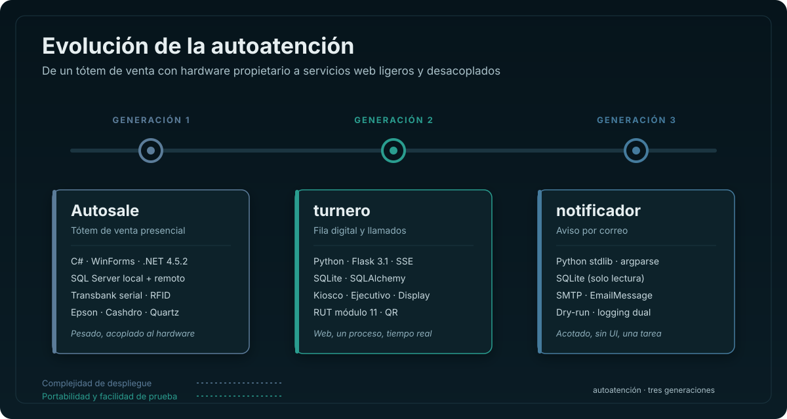
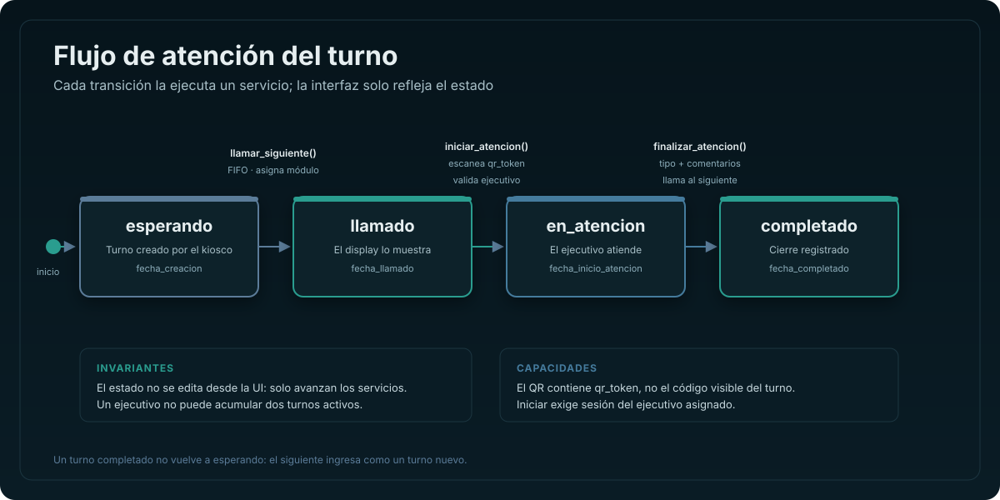
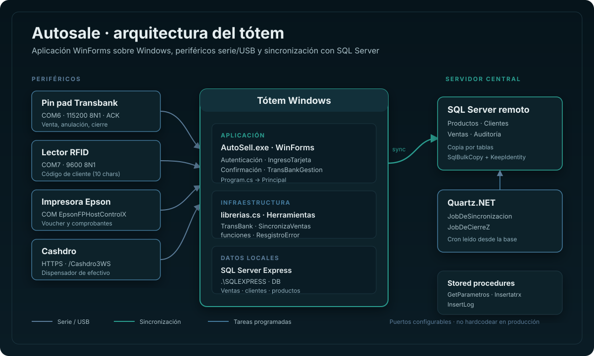
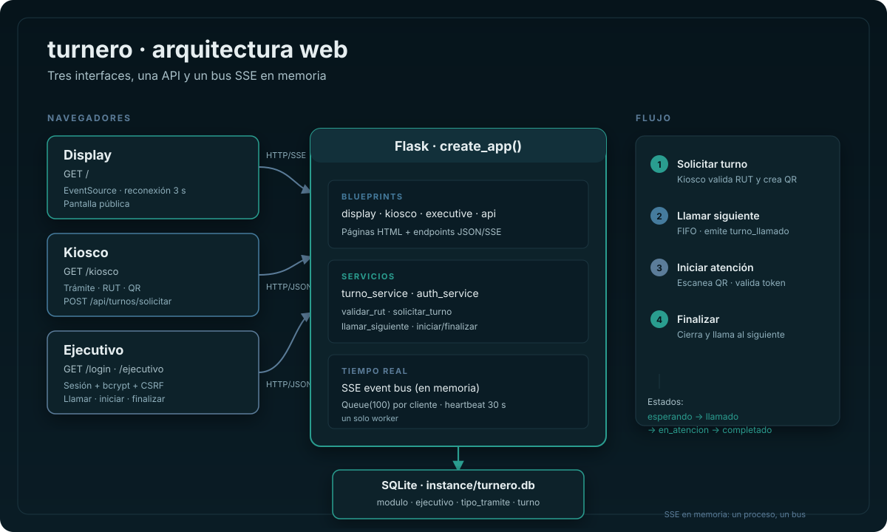

Del primer tótem
al turno notificado.
Tres versiones de un sistema de autoatención: venta, turnos y notificación.

Autoatención: de un tótem de venta a una plataforma de turnos
Recorrido por Autosale, el tótem de autoatención en C#: lectura de tarjeta, venta con Transbank por serial, persistencia y sincronización entre sedes.
Autoatención: de un tótem de venta a una plataforma de turnos
Recorrido por Autosale, el tótem de autoatención en C#: lectura de tarjeta, venta con Transbank por serial, persistencia y sincronización entre sedes.
Fragmentos literales de versions/Autosale. Varios formularios están en formato opaco y no compilan tal cual; no hay integración productiva con Transbank ni credenciales en el repositorio.
Qué es y por qué existe
Archivo de evolución de un sistema de autoatención para tiendas: tres generaciones que van desde una aplicación de escritorio en C# con lector RFID, impresora Epson y terminal Transbank, hasta un turnero web en Flask y un notificador de correo en Python. Documenta decisiones de integración, protocolos serie y el paso de un cliente pesado a una arquitectura web.
Solo la primera generación, Autosale, está incluida en el repositorio público; el turnero y el notificador se solicitan por privado. Por eso el valor principal es el análisis técnico: el README explica qué se conservó, qué falta y por qué los formularios originales no permiten una compilación reproducible. Es material de referencia para quien integra hardware de punto de venta, no un kit listo para desplegar.
Documentación preservada
El README original, completo y en su contexto.
De un tótem de venta con Transbank a una plataforma de turnos con QR, SSE y notificación por correo. Repositorio de estudio que reúne, con fines de portafolio, tres implementaciones sucesivas de software para autoatención: Autosale, turnero y notificador.

Índice
- Qué contiene este repositorio
- La idea en una página
- Evolución del sistema
- Mapa de versiones
- Flujo de atención de punta a punta
- Arquitectura de Autosale (primera versión)
- Arquitectura de turnero (segunda versión)
- Arquitectura de notificador (tercera versión)
- Cómo se relacionan las tres versiones
- Requisitos e instalación
- Operación
- Configuración y variables
- Despliegue típico
- Seguridad, límites y advertencias
- Roadmap y mejoras sugeridas
- Preguntas frecuentes
- Documentación adicional
- Licencia
Qué contiene este repositorio
Este repositorio no es un único producto ejecutable, sino un archivo de evolución técnica. Bajo versions/ conviven tres proyectos independientes que resolvieron, en distintos momentos y con distintas tecnologías, problemas de autoatención:
| Carpeta | Generación | Rol | Stack principal |
|---|---|---|---|
versions/Autosale |
Primera | Tótem de venta con cobro presencial | C# WinForms · .NET Framework 4.5.2 · SQL Server · Transbank serial · RFID · Epson |
versions/turnero |
Segunda | Gestión de turnos con kiosco, ejecutivo y display | Python 3 · Flask 3.1 · SQLAlchemy · SQLite · SSE · QR |
versions/notificador |
Tercera | Notificación de un carrito por correo | Python 3.10+ · biblioteca estándar · SQLite · SMTP |
Cada carpeta conserva el contenido original importado desde su repositorio de origen y su propio VERSION.md, que explica qué se incluyó, qué se excluyó por privacidad y cómo se sanitizaron los datos. Las credenciales reales, las bases de producción y los artefactos sensibles no forman parte de este repositorio.
Nota de lectura: este README y
docs/describen el conjunto. Cada versión mantiene su documentación original enversions/<nombre>/README.mdy, cuando existe, enversions/<nombre>/docs/. Ante discrepancias, el código y elVERSION.mdde la versión concreta son la fuente de verdad.
Qué se puede hacer
- Estudiar la evolución: de una aplicación de escritorio monolítica con hardware propietario a una arquitectura web ligera y desacoplada.
- Con acceso a
turnero, ejecutarlo en local y probar el flujo completo con sus tres interfaces. - Con acceso a
notificador, ejecutarlo contra una SQLite de ejemplo y ver el correo en modo--dry-run. - Leer
Autosalecomo documento de ingeniería: protocolo serial de Transbank, sincronización con SQL Server y periféricos. Varios formularios están en formato opaco y no compilan tal cual.
Qué no se puede hacer
- No hay una aplicación unificada que arranque las tres versiones a la vez.
- No hay ejecutables, instaladores, bases de datos ni claves.
- No hay integración productiva con Transbank, Cashdro, Epson ni un SMTP real.
- No es un sistema listo para producción sin endurecimiento y revisión legal.
La idea en una página
La autoatención consiste en trasladar al usuario final parte del trabajo que antes hacía un mostrador: sacar un turno, consultar el estado de una fila, pagar un producto, recibir un comprobante. El software debe resolver tres tensiones clásicas:
- Simplicidad para el usuario: pocos pasos, instrucciones claras, tolerancia a errores de tipeo.
- Coherencia operativa: varias pantallas y varios operadores ven el mismo estado sin pisarse.
- Integración con hardware y servicios externos: impresoras, lectores, pin pads, bases de datos, correo.
Las tres versiones atacan el mismo problema desde ángulos distintos:
- Autosale automatiza la venta presencial en un tótem: identifica al cliente, consulta su saldo, cobra con Transbank, imprime y sincroniza la venta con un servidor central.
- turnero automatiza la fila de atención: el cliente pide un turno, un ejecutivo lo llama, lo atiende y lo cierra; una pantalla pública muestra el estado en tiempo real.
- notificador automatiza la comunicación posterior: detecta el último carrito guardado en SQLite y lo envía por correo.
La evolución tecnológica es deliberada: se pasó de un cliente pesado Windows con dependencias COM y SQL Server a servicios web pequeños, con una base embebida y comunicación por HTTP/SSE. Esa transición reduce el costo de instalación, facilita las pruebas y permite reutilizar componentes.
Evolución del sistema
Primera generación: Autosale (tótem de venta)
Autosale nace como una aplicación de escritorio para tótems de autoatención en faenas mineras y casinos en Chile. El contexto imponía requisitos duros: operación en Windows con hardware serie/USB, cobro con tarjetas mediante un pin pad Transbank, identificación por tarjeta RFID de convenio, impresión de comprobantes en una Epson, sincronización periódica con SQL Server (el tótem podía quedarse sin red) y tolerancia a fallos para no perder ventas.
La solución fue una aplicación WinForms con dos proyectos: AutoSell y Biblioteca. La infraestructura vive en librerias.cs (namespace Herramientas): acceso a datos, sincronización, tareas Quartz.NET y el cliente serial de Transbank. La UI se reparte en formularios de autenticación, ingreso de tarjeta, confirmación, comandos del POS y mensajes de pantalla. El diseño refleja la época: acoplamiento fuerte entre UI y lógica, conexión directa a SQL Server, credenciales embebidas y formularios del diseñador de Visual Studio. Es una pieza valiosa para entender cómo se integraba hardware real antes de las APIs HTTP.
Segunda generación: turnero (fila digital)
El turnero cambia de problema y de stack. Ya no se cobra: se ordena la atención en tres experiencias:
- Kiosco (
/kiosco): el cliente elige el trámite, ingresa su RUT y recibe un ticket con código y QR. - Ejecutivo (
/ejecutivo): inicia sesión, llama al siguiente, escanea el QR y finaliza la atención. - Display (
/): pantalla pública con los turnos llamados por módulo, en tiempo real.
La arquitectura es Flask con blueprints, SQLAlchemy y SQLite. El estado tiene cuatro valores (esperando, llamado, en_atencion, completado) y transiciones controladas por servicios. La comunicación en vivo usa Server-Sent Events (SSE): el servidor empuja eventos y el navegador reconecta si se corta. No hay WebSocket ni colas externas; para una oficina pequeña alcanza y simplifica.
El turnero introduce mejoras concretas: validación de RUT con módulo 11 en cliente y servidor, contraseñas con bcrypt, sesiones firmadas, protecciones CSRF, token QR aleatorio separado del código visible, interfaz responsive con Bootstrap y base embebida sin motor que instalar.
Tercera generación: notificador (correo desacoplado)
El notificador es una utilidad de línea de comandos, sin framework y sin dependencias externas. Su tarea es angosta: leer el último carrito de una base SQLite y enviarlo por correo. Descubre tablas carrito_AAAAMMDD_HHMMSS, elige la más reciente por timestamp, calcula subtotales faltantes, omite filas inválidas con advertencia, genera un correo de texto plano alineado, soporta --dry-run y registra en consola y archivo. Usa solo sqlite3, smtplib, email, logging y argparse.
Es la generación más pequeña, pero la que mejor muestra una filosofía: una responsabilidad, un ejecutable, una configuración mínima. También es la que deja más trabajo pendiente para producción (TLS, autenticación SMTP, reintentos, destinatarios múltiples), documentado explícitamente.
Lectura de la evolución
| Dimensión | Autosale | turnero | notificador |
|---|---|---|---|
| Modelo de ejecución | Cliente Windows pesado | Servidor web + navegador | Script de línea de comandos |
| Estado | SQL Server central + copia local | SQLite embebida | SQLite de solo lectura |
| Interfaz | WinForms | HTML/CSS/JS con Bootstrap | Ninguna (correo) |
| Tiempo real | Sondeo y eventos locales | SSE | No aplica |
| Integración dura | Serial Transbank, RFID, Epson | HTTP/JSON, cámara QR | SMTP |
| Autenticación | Formulario local + RFID | Sesión + bcrypt + CSRF | Ninguna (operador del sistema) |
| Despliegue | Instalador Windows por tótem | Un proceso Python | Cron / Programador de tareas |
| Complejidad | Alta | Media | Baja |
Modelo de acceso
La primera versión (Autosale) es pública y gratuita: es el punto de partida para entender el proyecto, probarlo y construir sobre él. Las 2 versiones restantes son privadas y se comparten solo mediante solicitud.
Alcance del repositorio público: solo está incluida
versions/Autosale. Las rutas a otras versiones se mencionan como referencia histórica y no forman parte de este repositorio; se comparten por solicitud.Última versión: privada. Las mejoras, optimizaciones, depuraciones y variantes de hardware no se entregan de forma anónima: se solicitan y se acuerdan con un alcance claro.
| Versión | Acceso | Enlace |
|---|---|---|
Autosale |
Pública | Ver carpeta |
turnero |
Privada | Solicitar acceso |
notificador |
Privada | Solicitar acceso |
La licencia MIT de este repositorio se aplica únicamente a la primera versión pública. Las versiones privadas se rigen por el acuerdo de acceso correspondiente.
Mapa de versiones
versions/Autosale — primera versión
- Origen: importado desde
jmadasme/Autosale. - Tipo: solución Visual Studio (
AutoSell.sln, formato VS14). - Target: .NET Framework 4.5.2, aplicación WinExe.
- Dependencias: Common.Logging 3.0.0, Common.Logging.Core 3.0.0, Newtonsoft.Json 10.0.1, Quartz 2.3.3, referencia COM
EpsonFPHostControlX/AxEpsonFPHostControlXv1.8. - Hardware: pin pad Transbank por serial, lector RFID por serial, lector de código de barras, impresora Epson, dispensador Cashdro por HTTP.
- Persistencia: SQL Server local (
.\SQLEXPRESS) y base remota; sincronización por tablas conSqlBulkCopy. - Estado del código: parcialmente legible. Los formularios principales están en un formato binario/opaco que no es texto C# válido. La lógica de infraestructura sí es legible y documentable.
- Documentación:
VERSION.mdy README original.
versions/turnero — segunda versión
- Origen: importado desde
jmadasme/turnero. - Tipo: aplicación web Flask con fábrica de aplicación.
- Dependencias:
Flask==3.1.*,Flask-SQLAlchemy==3.1.*,bcrypt==4.*. - Persistencia: SQLite (
instance/turnero.dbpor defecto). - Interfaces: display público, kiosco, login y panel de ejecutivo.
- Tiempo real: SSE con heartbeat cada 30 segundos.
- Estado del código: completo y ejecutable; incluye seed de datos demo.
- Documentación:
VERSION.md,README.md,docs/datasheet.md,docs/developer.md.
versions/notificador — tercera versión
- Origen: importado desde
jmadasme/notificador. - Tipo: script Python de línea de comandos.
- Dependencias: ninguna externa; Python 3.10+.
- Persistencia: SQLite en modo lectura (no crea ni migra tablas).
- Interfaces: CLI y correo de texto plano.
- Estado del código: completo y ejecutable; el envío real es un esqueleto que requiere completar TLS/autenticación.
- Documentación:
VERSION.md,README.md,docs/datasheet.md,docs/developer.md.
Criterios de sanitización aplicados
Los VERSION.md dejan constancia de que, al importar cada proyecto:
- Se excluyeron credenciales, cadenas de conexión reales, bases de datos y archivos de entorno.
- Se conservó la estructura y el código original no sensible.
- Se mantuvieron archivos
.examplecuando el proyecto los preveía. - Se excluyeron artefactos de compilación y binarios.
- Excepción documentada: en Autosale persisten credenciales legacy embebidas en código y un certificado temporal de firma. Se conservan como parte del material histórico, pero no deben reutilizarse ni publicarse. La sección de seguridad lo detalla.
Flujo de atención de punta a punta
El recorrido combina turnero y notificador y muestra dónde encajaría Autosale. No es un flujo único implementado de extremo a extremo: es el modelo mental que el repositorio permite reconstruir.
1. Solicitud del turno
El cliente elige un trámite en el kiosco. La pantalla los obtiene con GET /api/tramites, lo formatea y valida el RUT con módulo 11 mientras escribe. Al confirmar, envía POST /api/turnos/solicitar con {tipo_tramite_id, rut} y encabezados CSRF. El backend revalida el RUT, genera un código correlativo por tipo (prefijo + número) y un qr_token aleatorio de 32 bytes en hexadecimal, persiste el turno en esperando con fecha UTC y devuelve 201. El ticket muestra código, trámite y QR; el QR contiene el token, no el código visible.
2. Llamado
El ejecutivo inicia sesión en /login; la sesión guarda ejecutivo_id, ejecutivo_nombre y modulo_id. Al presionar "Llamar siguiente", el frontend consulta GET /api/ejecutivo/siguiente. El servicio verifica que el ejecutivo no tenga ya un turno en llamado o en_atencion, toma el esperando más antiguo (FIFO por fecha_creacion), lo asigna al ejecutivo y a su módulo, cambia a llamado, registra fecha_llamado y emite por SSE turno_llamado con código, módulo y ejecutivo. El display, suscripto a /api/turnos/eventos, actualiza el módulo y resalta el código.
3. Atención
El cliente llega al módulo. El ejecutivo escanea el QR con la cámara (html5-qrcode) y el frontend envía POST /api/ejecutivo/iniciar-atencion con {qr_token}. El servicio busca el turno por token, exige estado llamado y que el ejecutivo asignado coincida, cambia a en_atencion, registra fecha_inicio_atencion y emite turno_atendido. El display muestra "En atención".
4. Cierre
El ejecutivo elige tipo de atención y comentarios opcionales; el frontend envía POST /api/ejecutivo/finalizar-atencion. El servicio marca completado, guarda fecha_completado, tipo y comentarios, emite turno_finalizado y acto seguido intenta llamar al siguiente turno del ejecutivo. Si hay, lo pasa a llamado y emite un segundo turno_llamado. El panel y el display reflejan el nuevo estado.
5. Notificación
Un proceso externo (cron, systemd timer o Programador de tareas) ejecuta notificador.py. El script abre la SQLite indicada, descubre las tablas carrito_%, elige la de timestamp más reciente, lee productos, cantidades, precios y subtotales, calcula lo que falte y arma un correo de texto plano con el detalle y el total. En --dry-run registra el contenido y termina con código 0 sin enviar. En modo real intenta SMTP; el código actual no completa TLS ni autenticación, un punto de extensión deliberado.
Diagrama de estados del turno

El estado avanza solo por acciones del servicio: esperando → llamado → en_atencion → completado. Transiciones inválidas (iniciar sin haber sido llamado, finalizar un turno ajeno) se rechazan. La UI no edita el estado.
Arquitectura de Autosale (primera versión)

Capas y proyectos
La solución AutoSell.sln tiene dos proyectos: AutoSell (WinExe, formularios) y Biblioteca (ClassLibrary). La aplicación arranca en Program.Main con Application.Run(new Principal()). El formulario principal coordina autenticación, identificación del cliente, consulta de saldo, confirmación, cobro, impresión y sincronización.
La infraestructura vive en librerias.cs (namespace Herramientas): acceso a SQL Server, sincronización por tablas, tareas Quartz.NET y el cliente serial de Transbank. En AutoSell están los formularios: Autenticacion, IngresoTarjeta, Confirmacion, TransBankGestion, mensajesPantalla y Principal. En Biblioteca, Class1.cs repite la sincronización y una copia de la clase TransBank.
Integración con Transbank
La clase TransBank implementa IDisposable y habla por serial con el pin pad:
| Parámetro | Valor |
|---|---|
| Puerto | COM6 (configurable) |
| Velocidad | 115200 baudios |
| Formato | 8N1, Handshake.None |
| Timeout de lectura | 120000 ms |
| Evento | OnMensajeEstado con MensajesTbk |
El protocolo usa STX (0x02) y ETX (0x03), campos separados por | y checksum XOR sobre todos los caracteres, incluido ETX. Al recibir datos, el cliente responde ACK (0x06). Comandos: 0070 inicialización, 0080 respuesta de inicialización, 0100 polling, 0200 venta, 0250 última venta, 0410 PAN encriptado, 0500 cierre, 0800 carga de llaves y 1200 anulación.
La venta se envía como 200|precio|timestamp|1|0. La respuesta se parsea por posiciones fijas: comando, resultado, comercio, terminal, boleta, autorización, monto, últimos dígitos, operación y tipo (DB débito, CR crédito). Según el tipo se leen fecha, hora, cuenta y abreviaturas en offsets distintos; el voucher llega tras el último separador. Los códigos de resultado se traducen a mensajes de pantalla (autorizador sin respuesta, conexión fallida, anulada, tarjeta no soportada, cancelación, monto mínimo, cierre pendiente, error de lectura). La tabla completa está en docs/datasheet.md.
Cada transacción se registra con el stored procedure Insertatrx (doce parámetros). Si el POS no responde, el flujo se bloquea y se apoya en los mensajes de estado.
RFID, confirmación y periféricos
IngresoTarjeta abre COM7 a 9600 baudios, 8N1, timeout de 500 ms; en DataReceived toma RxString.Substring(1, 10) como código de cliente. El formulario es circular y se autocierra a los 10 segundos. La tarjeta no almacena saldo: identifica al socio y el saldo se consulta en la base.
Confirmacion recibe producto, cliente, saldo, precio y saldo resultante; usa cultura es-CL y formato {0:C2}. Los botones Aceptar y Cancelar devuelven el control al flujo.
Otros periféricos: impresora Epson por COM EpsonFPHostControlX v1.8, lector de código de barras con puerto configurable, dispensador Cashdro por HTTP (https://{IP}/Cashdro3WS) y correo SMTP con adjuntos. hayconexionInternet() y hayconexionCasdro() permiten degradar el flujo sin red.
Sincronización y tareas programadas
SincronizaVentas lee parámetros con el stored procedure GetParametros y copia tablas entre base local y remota con SqlBulkCopy; las acciones son TruncateDestino y TruncaOrigen, con KeepIdentity para conservar claves. Los errores se registran con ResgistroError.insertarLog (stored procedure InsertLog).
Quartz.NET programa JobDeSincronizacion (productos y clientes remotos → local; auditoría de clientes local → remota) y JobDeCierreZ (cierre de caja). El cron se lee de la base, lo que permite ajustar la frecuencia sin recompilar: una decisión pragmática para flotas de tótems.
Deuda técnica visible
Duplicación de TransBank en dos proyectos, UI y negocio entrelazados, credenciales SMTP embebidas (rotar y externalizar), conexión SQL Server con autenticación integrada de Windows, formularios principales en formato opaco y un certificado temporal de firma incluido en el repositorio.
Arquitectura de turnero (segunda versión)

Vista de componentes
Navegador (display) ──┐
Navegador (kiosco) ──┼── HTTP/JSON + SSE ──► Flask (app.py)
Navegador (ejecutivo)─┘ │
├── routes/display.py
├── routes/kiosco.py
├── routes/executive.py
├── routes/api.py
├── services/turno_service.py
├── services/auth_service.py
└── models.py ──► SQLite
La aplicación usa el patrón application factory: create_app() construye la app, carga la configuración, inicializa SQLAlchemy, registra blueprints y crea la base si no existe. Al primer arranque, si no hay ejecutivos, ejecuta el seed.
Blueprints y responsabilidades
| Blueprint | Rutas | Responsabilidad |
|---|---|---|
display |
GET / |
Pantalla pública |
kiosco |
GET /kiosco |
Interfaz de solicitud de turno |
executive |
GET /login, GET /ejecutivo |
Login y panel del operador |
api |
/api/... |
JSON, SSE y mutaciones |
Modelo de datos
Modulo 1 ──── N Ejecutivo
│
└──── N Turno ──── 1 TipoTramite
- Modulo: nombre, activo. Agrupa ejecutivos y turnos.
- Ejecutivo: username único, hash bcrypt, nombre, módulo, activo.
- TipoTramite: código de una letra, nombre, prefijo del correlativo.
- Turno: código único, tipo, RUT, estado, módulo y ejecutivo asignados, marcas de tiempo, tipo de atención, comentarios y
qr_tokenúnico.
Turno.to_dict() expone todos los campos para uso interno. to_display_dict() elimina qr_token antes de enviar datos a endpoints públicos, para que el token no se filtre en la pantalla ni en la API de display.
Servicios
turno_service.py concentra las reglas:
validar_rut: limpia formato, calcula módulo 11 y normaliza 10 →K, 11 →0._generar_codigo_turno: prefijo + cantidad histórica del tipo + 1.solicitar_turno: valida, crea token y persiste enesperando.llamar_siguiente: impide doble llamado y respeta FIFO.iniciar_atencion: exige token, estadollamadoy ejecutivo correcto.finalizar_atencion: cierra y encadena el siguiente llamado.get_cola,get_estado_display,get_ejecutivo_estado: consultas de lectura.
auth_service.py maneja bcrypt, sesión, decoradores login_required, api_login_required y csrf_protected. La protección CSRF es artesanal: exige JSON, encabezado X-Requested-With: XMLHttpRequest y origen/referer del mismo host. No reemplaza a un token CSRF formal, pero eleva la barrera para peticiones cross-site simples.
API y SSE
La API se documenta en detalle en docs/developer.md. Los grupos son:
- Autenticación:
POST /api/auth/login,POST /api/auth/logout. - Público:
GET /api/tramites,GET /api/modulos,GET /api/turnos/display,GET /api/turnos/eventos. - Kiosco:
POST /api/turnos/solicitar. - Ejecutivo:
GET /api/ejecutivo/siguiente,POST /api/ejecutivo/iniciar-atencion,POST /api/ejecutivo/finalizar-atencion,GET /api/ejecutivo/cola,GET /api/ejecutivo/estado.
SSE se implementa con una lista de colas en memoria protegida por un lock. Cada cliente recibe una Queue(maxsize=100); si se llena, se descarta. El endpoint mantiene la conexión abierta, envía un heartbeat cada 30 segundos y consulta la cola cada 5 segundos. Es una solución correcta para un solo proceso; con varios workers, los eventos no se comparten y haría falta un bus (Redis, PostgreSQL LISTEN/NOTIFY, etc.).
Estado y concurrencia
El turno avanza solo por acciones del servicio. llamar_siguiente evita que un ejecutivo acumule turnos. La consulta FIFO usa fecha_creacion ascendente; si dos solicitudes llegan en el mismo instante, el orden queda determinado por la granularidad del timestamp y el id autogenerado. La generación de códigos por conteo tiene una condición de carrera teórica bajo cargas altas; para una oficina pequeña es aceptable, para varias sucursales conviene una secuencia por tipo y sucursal.
Frontend
- Bootstrap 5.3.3 por CDN para layout y componentes.
- qrcodejs 1.0.0 por CDN en el kiosco; QR de 200×200, color oscuro azul, corrección de errores alta.
- html5-qrcode 2.3.8 por CDN en el panel del ejecutivo; cámara trasera, 10 fps, recuadro de 250 px.
- display.js: carga inicial por fetch, luego
EventSource; reconexión a los 3 segundos; overlay cuando no hay turnos. - kiosco.js: tres pasos, formateo y validación de RUT, fallback de trámites si la API falla.
- executive.js: vistas sin turno, llamado y atención; cronómetro; refresco de cola cada 15 s y de estado cada 10 s; escaneo QR y logout.
Datos demo
El seed crea tres tipos de trámite (A, B, C), tres módulos y tres ejecutivos de demostración. Las credenciales están en seed.py y son solo para desarrollo; deben rotarse o eliminarse antes de cualquier despliegue real. Al borrar instance/turnero.db, el siguiente arranque vuelve a sembrar los datos.
Arquitectura de notificador (tercera versión)
Flujo de ejecución
CLI ──► argparse ──► verificar DB ──► sqlite3.connect
│
├── descubrir tablas carrito_*
├── elegir la más reciente
├── leer filas y calcular totales
├── formatear EmailMessage
└── enviar (o dry-run)
Decisiones de diseño
- Sin dependencias: solo biblioteca estándar. Simplifica el despliegue en servidores antiguos; el repositorio igual documenta un entorno virtual por uniformidad.
- Solo lectura: no crea tablas, no migra y no escribe en la base. Si no existe, falla con código 1.
- Descubrimiento por convención: las tablas se llaman
carrito_AAAAMMDD_HHMMSSy se ordenan por el timestamp del nombre, no por fecha de creación. - Tolerancia a datos sucios: si
cantidadoprecio_unitarioson nulos, la fila se omite con warning; sisubtotalfalta o es cero, se calcula. - Dry-run de primera clase: permite validar conexión, selección de tabla y formato sin credenciales SMTP.
- Logging dual: consola en INFO, archivo en DEBUG, con protección contra handlers duplicados.
Formato y envío del correo
Remitente notificador@kiosco.local, asunto Notificación de carrito - {tabla} y cuerpo de texto plano con tabla alineada (producto, cantidad, precio unitario, subtotal) y línea de TOTAL. Sin adjuntos ni HTML: menos superficie de error y mejor compatibilidad.
El código usa smtplib.SMTP(host, 587, timeout=30) y send_message, pero no llama a starttls() ni a login(). Es un esqueleto para un relay local o para completar según el proveedor. En producción hay que usar SMTP_SSL o starttls() con validación de certificado, autenticar con credenciales fuera del código, implementar reintentos con backoff, permitir varios destinatarios y validar direcciones.
CLI y códigos de salida
python notificador.py --dry-run
python notificador.py --db-path /ruta/a/kiosco.db --destino admin@ejemplo.cl
python notificador.py --help
El --db-path relativo se resuelve respecto del directorio del script, no del directorio de trabajo, para evitar sorpresas al ejecutarlo desde cron. Código 0: éxito (incluye dry-run); código 1: base inexistente, error de lectura o fallo de envío.
Cómo se relacionan las tres versiones
No comparten esquema de base ni contrato de API. La relación es conceptual y de evolución:
- Autosale demuestra la autoatención transaccional con hardware.
- turnero demuestra la autoatención de servicios y la coordinación en tiempo real.
- notificador demuestra la automatización de una comunicación posterior, desacoplada del frontend.
El notificador, tal como está, apunta por defecto a una base de un proyecto de kiosco con tablas carrito_*, no a la base del turnero. Ese acoplamiento por ruta es histórico y no debe asumirse como integración lista. Para notificar turnos hay que escribir un adaptador que lea la tabla turno y genere el correo; el resto de la utilidad (logging, dry-run, formato) se reutiliza. Autosale tampoco comparte código: su valor es documental, muestra el protocolo serial, la sincronización y el modelo de hardware que las generaciones siguientes evitaron.
Requisitos e instalación
Requisitos generales
- Autosale: Windows 7/8/10, Visual Studio 2015 o superior con .NET Framework 4.5.2, SQL Server Express y hardware compatible (pin pad, RFID, impresora).
- turnero: Python 3.10+, pip y navegador moderno. No requiere servidor de base de datos.
- notificador: Python 3.10+. No requiere dependencias externas.
Instalación de turnero
cd versions/turnero
python3 -m venv venv
source venv/bin/activate # Linux/Mac
venv\Scripts\activate # Windows
pip install -r requirements.txt
| Paquete | Versión | Uso |
|---|---|---|
| Flask | 3.1.* | Servidor web, rutas, sesiones |
| Flask-SQLAlchemy | 3.1.* | ORM y manejo de SQLite |
| bcrypt | 4.* | Hash de contraseñas |
Arranque:
python app.py
Salida esperada: [*] Servidor iniciado en http://127.0.0.1:5000. La base se crea en instance/turnero.db; si no existe, se crean las tablas y se cargan los datos demo.
Instalación de notificador
cd versions/notificador
python3 -m venv venv
source venv/bin/activate # Linux/Mac
venv\Scripts\activate # Windows
pip install -r requirements.txt
El requirements.txt solo contiene comentarios que documentan que no hay dependencias externas. Aun así, se recomienda el entorno virtual para aislar el intérprete y futuras dependencias.
python notificador.py --help
python notificador.py --dry-run --db-path ./datos/kiosco.db
Compilación de Autosale
- Abrir
versions/Autosale/AutoSell.slncon Visual Studio. - Restaurar los paquetes NuGet (Common.Logging, Newtonsoft.Json, Quartz).
- Verificar la referencia COM a
EpsonFPHostControlX; si no está registrada, instalarla o quitar la dependencia para compilar. - Ajustar cadena de conexión y puertos en
librerias.cseIngresoTarjeta.cs. - Compilar en Debug o Release.
Advertencia: varios formularios están en formato opaco (no son C# de texto). El proyecto no compila tal cual en un entorno limpio. La documentación de Autosale es válida como análisis de arquitectura y protocolo, no como receta de build reproducible.
Operación
Operación de turnero
- Iniciar el servidor en el equipo central.
- Abrir el display en la pantalla pública:
http://<host>:5000/. - Abrir el kiosco en el tótem o tablet:
http://<host>:5000/kiosco. - Abrir el panel del ejecutivo:
http://<host>:5000/ejecutivo; redirige a/login. - Solicitar un turno y verificar que aparece en el display.
- Llamar, iniciar y finalizar desde el panel; verificar los cambios.
- Revisar la cola (se refresca cada 15 s) y cerrar sesión al terminar.
Buenas prácticas: proxy inverso con HTTPS si se expone en red, cambiar SECRET_KEY y las credenciales demo, no usar debug=True en producción, respaldar instance/turnero.db antes de actualizar y ejecutar el proceso con un usuario de sistema sin privilegios.
Operación de notificador
python notificador.py --dry-run
python notificador.py --destino operaciones@ejemplo.cl
Programación con cron:
*/15 * * * * cd /opt/notificador && ./venv/bin/python notificador.py >> notificador.cron.log 2>&1
En systemd, crear un .service de tipo oneshot con WorkingDirectory=/opt/notificador y ExecStart=/opt/notificador/venv/bin/python notificador.py, más un .timer con OnBootSec=5min y OnUnitActiveSec=15min. En Windows, usar el Programador de tareas con venv\Scripts\python.exe notificador.py.
Operación de Autosale
Verificar que el pin pad esté en COM6 y el lector RFID en COM7 (o ajustar los puertos), iniciar sesión, pasar la tarjeta del cliente, confirmar producto/saldo/precio, cobrar en el pin pad, esperar voucher e impresión y verificar la sincronización central. Los comandos manuales de TransBankGestion permiten inicializar, consultar la última venta, anular, cargar llaves y ejecutar el cierre; son herramientas de soporte, no parte del flujo normal.
Configuración y variables
turnero
| Variable | Valor por defecto | Descripción |
|---|---|---|
PORT |
5000 |
Puerto HTTP |
SECRET_KEY |
Clave de desarrollo | Firma de sesiones; cambiar en producción |
DATABASE_URL |
sqlite:///turnero.db |
URI de SQLAlchemy |
Archivo relevante: versions/turnero/config.py.
notificador
| Opción / constante | Valor por defecto | Descripción |
|---|---|---|
--db-path |
Ruta relativa al script | Base SQLite de origen |
--destino |
Constante del script | Correo destino |
--dry-run |
Desactivado | No envía, solo registra |
SMTP_HOST |
smtp.gmail.com |
Servidor SMTP |
SMTP_PORT |
587 |
Puerto SMTP |
LOG_FILE |
notificador.log |
Archivo de log |
Autosale
| Parámetro | Dónde se define | Descripción |
|---|---|---|
| Puerto del pin pad | TransBank.PuertoCOM |
Por defecto COM6 |
| Puerto RFID | IngresoTarjeta.PuertoCOM |
Por defecto COM7 |
| Cadena SQL Server | funciones.cnLocal |
Instancia local |
| Cron de sincronización | Base de datos | Expresión leída por Quartz |
| IP de Cashdro | Parámetro IPCashDro |
Dispensador de efectivo |
| Correo | Parámetros y enviarCorreo |
SMTP y destinatarios |
Despliegue típico
Turnero en una oficina
Red local / Wi-Fi
│
┌───────────────┼───────────────┐
│ │ │
[Display] [Kiosco] [Ejecutivo]
navegador tablet/tótem notebook
│ │ │
└───────────────┴───────────────┘
│ HTTP/SSE
┌─────▼─────┐
│ Flask │
│ :5000 │
└─────┬─────┘
│
┌─────▼─────┐
│ SQLite │
│ turnero.db│
└───────────┘
Recomendaciones:
- Un solo proceso de Flask (o workers con un bus de eventos si se escala).
- Proxy inverso (Nginx/Caddy) con TLS y compresión.
- IP fija o DNS interno para el servidor.
- Pantalla del display en modo kiosco del navegador.
- Reloj del servidor sincronizado por NTP (los timestamps son UTC).
Notificador en un servidor
cron/systemd ──► python notificador.py ──► SQLite (lectura)
└──► SMTP ──► correo
- Ejecutar como usuario sin privilegios.
- Montar la base en solo lectura si es posible.
- Rotar
notificador.logconlogrotate. - Monitorear el código de salida y los fallos de envío.
Autosale en un tótem
[Pin pad Transbank] ── serial ──┐
[Lector RFID] ─────── serial ──┤
[Lector barras] ───── USB ─────┼── PC Windows ── SQL Server local
[Impresora Epson] ─── USB/COM ─┤ │
[Dispensador Cashdro] ─ HTTP ──┘ │
sincronización
│
SQL Server remoto
Cada tótem requiere instalación, configuración de puertos, calibración de impresora y prueba de conectividad.
Seguridad, límites y advertencias
Seguridad
- Credenciales: los repositorios originales fueron sanitizados, pero Autosale conserva credenciales SMTP legacy en
librerias.csy un certificado temporalAutoSell_TemporaryKey.pfx. No reutilizar, no publicar, rotar de inmediato si el código se despliega. - Secretos de turnero:
SECRET_KEYtiene un valor de desarrollo. Si no se define la variable de entorno, las sesiones son predecibles. Cambiarla siempre. - Usuarios demo: el seed crea ejecutivos con contraseñas conocidas. Deshabilitarlos o cambiarlos en producción.
- CSRF: la protección es artesanal y depende de encabezados que un atacante podría intentar replicar en un escenario same-site. Para producción, usar tokens CSRF por sesión.
- SSE: no tiene autenticación; el display es público por diseño. No enviar datos personales en los eventos.
- Datos personales: el RUT es dato personal. La API de display no lo expone, pero la base sí lo almacena. Aplicar minimización, retención y control de acceso.
- QR: el
qr_tokenes una capacidad. Quien lo posea puede iniciar la atención si además tiene una sesión de ejecutivo válida. No imprimirlo en lugares públicos más allá del ticket. - SMTP: el notificador no usa TLS ni autenticación. No enviar información sensible hasta completarlo.
- Autosale: el protocolo serial no cifra datos; el pin pad maneja el secreto. La base local y la remota deben estar en redes confiables.
Límites funcionales
- turnero no maneja múltiples sucursales, prioridades, turnos preferenciales ni reprogramación.
- No hay notificaciones al cliente (SMS, push) ni pantalla de llamado con audio.
- No hay impresión térmica de tickets: el QR se muestra en pantalla.
- No hay informes históricos ni exportación; solo consultas en vivo.
- La cola se agrupa por tipo de trámite, no por módulo.
- El display muestra un turno actual por módulo; no una lista completa.
- notificador no se integra con el esquema del turnero; apunta a tablas
carrito_*. - No hay reintentos ni cola de mensajes si el SMTP falla.
- Autosale no es compilable tal cual por los archivos opacos; además depende de hardware y licencias de terceros.
Advertencias legales y de marca
- Transbank, Cashdro, Epson, Microsoft, Flask y demás marcas pertenecen a sus titulares. Este repositorio es material de estudio y no está afiliado a ellas.
- La integración con Transbank requiere contratos, certificación y credenciales vigentes. El código histórico no constituye una guía oficial de integración.
- El tratamiento de datos personales (RUT, correo, transacciones) debe cumplir la normativa aplicable en cada país.
Roadmap y mejoras sugeridas
Corto plazo
- Reemplazar la protección CSRF artesanal por Flask-WTF o tokens por sesión.
- Externalizar toda la configuración sensible a variables de entorno.
- Agregar pruebas automatizadas de servicios y endpoints.
- Completar TLS y autenticación en el notificador.
- Agregar
requirements.txtcon versiones fijas y auditoría de dependencias. - Documentar el esquema de la base con migraciones (Alembic).
Mediano plazo
- Añadir autenticación al display o separar un endpoint público mínimo.
- Implementar prioridades y tiempos estimados de espera.
- Añadir impresión térmica de tickets y aviso por audio.
- Soportar múltiples sucursales con un identificador en módulos y turnos.
- Reemplazar SSE en memoria por un bus (Redis) para escalar horizontalmente.
- Crear un adaptador de notificaciones para turnos y para autoservicio.
Largo plazo
- Reescribir Autosale como servicio .NET moderno con APIs HTTP y abstracción de hardware.
- Unificar turnero y notificador en una plataforma con identidad, auditoría y observabilidad.
- Añadir panel de administración para trámites, módulos y ejecutivos.
- Métricas: tiempo de espera, tiempo de atención, volumen por tipo, tasa de abandono.
Preguntas frecuentes
¿Puedo ejecutar las tres versiones juntas? No como un producto único. Turnero y notificador pueden convivir en el mismo servidor, pero no comparten esquema. Autosale es una aplicación Windows independiente.
¿Turnero funciona sin internet? Sí, en red local. Bootstrap, qrcodejs y html5-qrcode se cargan por CDN; sin internet, la UI pierde estilos y la generación/lectura de QR puede fallar. Para un despliegue aislado, descargar esos recursos y servirlos localmente.
¿Dónde se guarda la base de turnero?
En versions/turnero/instance/turnero.db, salvo que se defina DATABASE_URL.
¿Cómo agrego un tipo de trámite?
Insertando un registro en tipo_tramite con código, nombre y prefijo, o extendiendo el seed. El kiosco lo mostrará automáticamente.
¿Cómo agrego un módulo o un ejecutivo? Creando el módulo y el ejecutivo con su hash bcrypt. El seed sirve de ejemplo; en producción conviene un comando administrativo.
¿El QR contiene el código del turno?
No. Contiene qr_token, un valor aleatorio separado del código visible. Así, conocer el código no permite iniciar la atención.
¿Por qué SSE y no WebSocket? Porque el flujo es unidireccional servidor → navegador, SSE reconecta solo y es más simple de operar. Para interacción bidireccional o escalado, WebSocket o un bus de eventos serían mejores.
¿Por qué SQLite? Porque el despliegue objetivo es una oficina pequeña, sin administrador de base de datos. SQLite simplifica instalación y respaldo. Para concurrencia alta o varias sucursales, conviene PostgreSQL.
¿El notificador envía correos reales? Solo si se completa la configuración SMTP (TLS y autenticación). Tal como está, el envío real es un esqueleto.
¿Puedo usar el código comercialmente? Sí, bajo licencia MIT, siempre que se respeten las licencias de terceros y la normativa aplicable. Autosale contiene dependencias y referencias COM cuyas licencias deben verificarse por separado.
¿Por qué hay archivos que no se pueden abrir? Porque fueron guardados en un formato binario/opaco (probablemente por el diseñador de Visual Studio o por una herramienta externa). Se conservan como evidencia histórica, pero no son editables como texto.
Documentación adicional
| Documento | Contenido |
|---|---|
docs/datasheet.md |
Especificaciones, operación por pantalla, campos, códigos de error y solución de problemas |
docs/developer.md |
Arquitectura, módulos, modelo de datos, API, guías de extensión y pruebas |
docs/REFERENCES.md |
Enlaces a documentación oficial y material de consulta |
docs/BITACORA.md |
Decisiones, problemas, enfoques descartados y lecciones aprendidas |
docs/assets/ |
Diagramas SVG del proyecto |
versions/turnero/README.md |
Documentación original del turnero |
versions/turnero/docs/ |
Datasheet y guía de desarrollador del turnero |
versions/notificador/README.md |
Documentación original del notificador |
versions/notificador/docs/ |
Datasheet y guía de desarrollador del notificador |
versions/Autosale/VERSION.md |
Alcance y sanitización de la primera versión |
Licencia
Este repositorio se distribuye bajo licencia MIT. El texto completo está en LICENSE.
Copyright (c) 2026 jmadasme. Se permite usar, copiar, modificar, fusionar, publicar, distribuir, sublicenciar y vender el software, siempre que se conserve el aviso de copyright y la licencia. El software se entrega sin garantías de ningún tipo.
Nota: la licencia MIT cubre el código y la documentación originales de este repositorio. Las dependencias de terceros (Transbank, Epson, Cashdro, Quartz.NET, Bootstrap, qrcodejs, html5-qrcode, etc.) mantienen sus propias licencias y condiciones.
Documentación generada para el portafolio de jmadasme · 2026
Los tropiezos, documentados
Las primeras versiones existen para que estos errores no se repitan: cada una dejó una decisión de diseño verificable.
Formularios opacos
Los formularios principales de Autosale están en un formato opaco que no compila como C# válido en un entorno limpio. Se conservaron como evidencia histórica y el README documenta la arquitectura y los protocolos en lugar de ofrecer un build que no puede garantizar; reconstruirlos requeriría rehacer esa capa.
SSE atado a un proceso
El turnero usa colas en memoria para enviar eventos SSE, de modo que solo funciona con un proceso. Con varios workers, cada cliente queda conectado a una instancia distinta y pierde eventos. El README documenta la limitación y propone un bus externo, como Redis o LISTEN/NOTIFY de PostgreSQL.
SMTP sin TLS ni login
El notificador abre una conexión SMTP en el puerto 587, pero no ejecuta starttls ni autenticación; el envío real queda como esqueleto y el modo dry-run es el camino probado. El README indica completar TLS, credenciales y reintentos antes de usarlo en producción, sin afirmar que ese flujo esté terminado.
CSRF artesanal
La protección CSRF se apoya en JSON, el encabezado X-Requested-With y la comprobación de origin y referer, sin token formal por sesión. Es una barrera razonable para el flujo de turnos, pero el README la describe como artesanal y no como equivalente a un esquema estándar; migrarla queda pendiente.
Cómo se mide este proyecto
Seis criterios con la misma escala en todo el catálogo, para comparar sin marketing.
Lo que suelen preguntar
¿Qué es este proyecto?
Un archivo de tres generaciones de autoatención: Autosale en C# WinForms con Transbank, RFID y Epson; un turnero Flask con SSE y QR; y un notificador SMTP en Python.
¿Qué parte está disponible?
Solo Autosale está en el repositorio público; el turnero y el notificador se solicitan por privado, y los formularios principales de Autosale están en un formato opaco que no compila tal cual.
¿Qué límites técnicos se documentan?
El turnero usa colas SSE en memoria y solo funciona con un proceso, el notificador no completa TLS ni login SMTP, y la protección CSRF es artesanal.
¿Qué se puede reutilizar?
Los protocolos serie de Transbank y RFID, el esquema de turnos con QR y las decisiones de arquitectura; hay que rotar credenciales y el certificado temporal antes de cualquier uso.
¿Te animás?
Usá esto como base y referencia para autoatención. Este proyecto es la prueba de que se puede hacer con componentes reales.